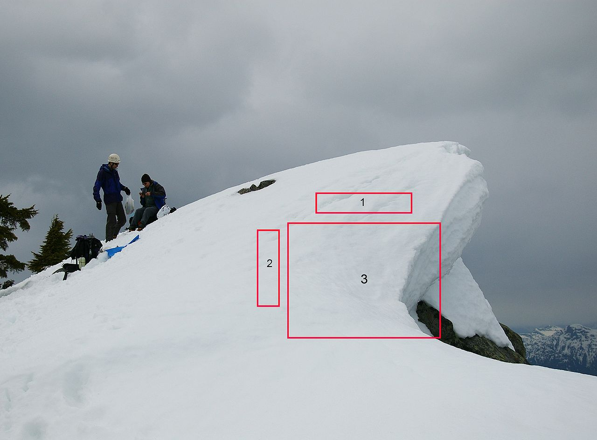

A snow cornice or simply cornice (from the Italian cornice meaning "ledge") is an overhanging edge of snow on a ridge or the crest of a mountain and along the sides of gullies. They form by wind blowing snow over sharp terrain breaks (e.g. the crest of the mountain) where it attaches and builds out horizontally. This build-up is most common on the leeward sides of mountains. Cornices are extremely dangerous and travelling above or below them should be avoided. When a cornice collapses, it breaks in from the cornice to the top of the peak; even being on the snow on top of rock exposes the alpinist to hazard in this situation. The best practice in mountaineering is to stay far enough back from the edge so as not to be able to see the drop, as an approximate metric of exposure. Of course, this is not always possible. A good test for safety (in sunny weather) is to insert an ice axe and see if a blue glow comes out of the hole. This indicates the ice is being lit from underneath, and that the climber should retreat to a safer location.[citation needed] In avalanche safety, cornices are a high avalanche danger as they often break and trigger larger avalanches that permeate several snow layers. Cornices are particularly vulnerable to collapse during periods of solar
